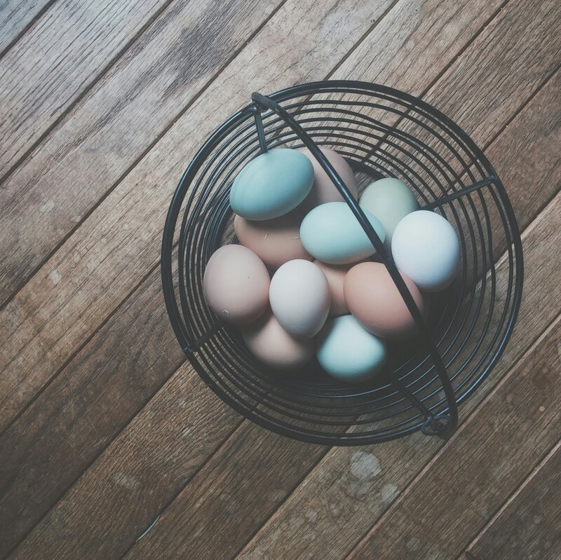

Before refrigeration, people kept eggs fresh for months using nothing but water and lime. The method is called water glassing — and it still works exactly the same way today. No electricity, no canning, no sealing. Just eggs, pickling lime, and water. The eggs stay raw and room-temperature-stable for eight to twelve months, and when you crack them they cook exactly like fresh eggs.

How it works
Fresh eggs have a natural protective coating called the bloom — an invisible layer the hen deposits as the egg leaves her body. The bloom seals the microscopic pores in the shell, keeping bacteria out and moisture in.
Water glassing preserves that bloom. The pickling lime (calcium hydroxide) dissolved in water creates an alkaline solution that prevents bacteria from growing and seals the eggshell pores even further. The egg inside stays raw, unchanged, and safe for months. It's the lowest-effort preservation method there is — mix the solution, add eggs, put it in a cool place, and walk away.
What you need
- Fresh, unwashed eggs. Same day is ideal. The bloom must be intact — this method doesn't work with washed eggs. If you have backyard hens or access to unwashed farmers market eggs, you're set.
- Pickling lime (calcium hydroxide). Find it in the canning section of the grocery store or at any hardware store. A one-pound bag costs a few dollars and lasts years.
- A food-grade bucket or large glass jar. Something with a wide enough mouth to reach in and pull eggs out. A lid that rests on top — not a tight seal.
- Water. Room temperature. Distilled is ideal but tap water works fine.
How to do it
- Mix the solution. The ratio: one quart of water to one ounce (about two tablespoons) of pickling lime. Stir until dissolved — the water will look milky. That's normal. Scale up for larger containers: a gallon of water gets about four ounces of lime.
- Add the eggs. Gently place unwashed eggs into the container. Pointy side down if you can — the air cell is at the round end and they store better this way. Don't crowd them, but fill the container.
- Cover with lime water. Pour the solution over the eggs until they're fully submerged by at least an inch or two of liquid. Any egg exposed to air will spoil.
- Cover loosely. Rest a lid on top — don't seal it tight. The container needs a little air exchange. A cloth secured with a rubber band also works.
- Store in a cool, dark place. Basement, pantry, cool closet. Aim for fifty to sixty degrees if possible, but regular room temperature works. Check occasionally — if water evaporates and exposes the eggs, top up with fresh lime solution.
The full Egg Preservation Guide covers all three methods — freezing (for baking), water glassing (for long-term backup), and pickling (for grab-and-eat snacks) — plus an "Emptying the Nest Box" section with 8 recipes that use up a glut of eggs, guidance on which preserved eggs work best for each recipe, step-by-step instructions, brine variations, and a notes page.
Egg Preservation Guide on Etsy →